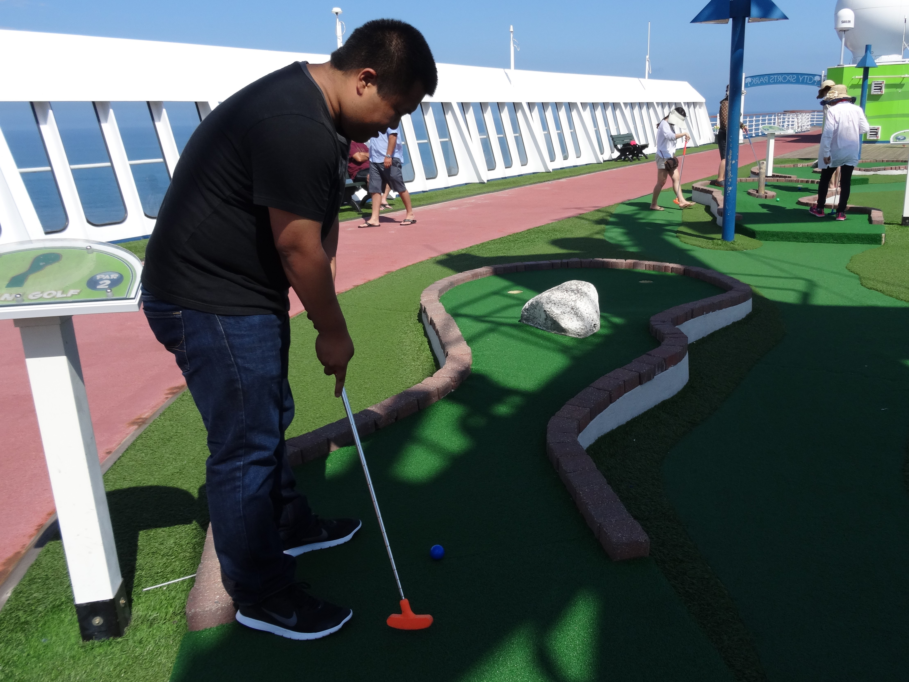

It was a very tough start for me to get into working out, but I have been trying to lose weight many many years before this moment of my life, it usually ends up in myself giving up from laziness. This time was different thanks to a very good friend at work that had always convinced me to go to the gym and run with him. I am so very grateful of him as it must have been very exhausting to convince me to go every single time. I am also grateful of him in pushing me to run and step up the pace every single time we go. A small push can really get someone really far in their fitness goals!
My routine all started on August of 2018! The following timeline is of how I got to where I am today is a rough somewhere of what I tried to during every work day of the week (Monday - Friday). To avoid ambiguity, I have decided to avoid listing external activities I do at a non-daily basis rate (ie, badminton, hiking, scuba diving, skiing, swimming, etc...).
To give you a summary of my timeline, I will provide how it all started for me and my starting stats! Body Fat % value is estimated as I did not get this measured at the time.
My Beginning Stats:

The workout routines were very tough, but I eventually made a lot of progress to meet my goals! To give you a rough estimate of my workout routine during the very beginning stages, this is how it all started for me! From August 2018 to roughly March 2019, the following estimated routines were what I followed.
Frequency from August to December:
I went to the gym only on Monday, Wednesday, and Fridays!
My routine in August:
My routine in September:
My routine in October - December:
Frequency from Jaunary to March:
I went to the gym everyday from Monday to Friday! New years resolution!
My routine in January - March:
To give you a summary of my timeline, I will provide how it all started for me and my starting stats! Body Fat % value is estimated as I did not get this measured at the time.
October 24th, 2019 Stats:
Frequency:
Everynight after work!
My routine between :
December 2nd, 2019 Stats:
My routine between October and December:
There are a few things I find very fascinating that the human body can do, but overall, I have found that after shedding off all the weight I use to have, I have found myself more lively with more energy!! It feels amazing!! Being able to have a healthy life style while being able to achieve more physically feels great! The change also gave me a few more goals to achieve as well!
My current goals: